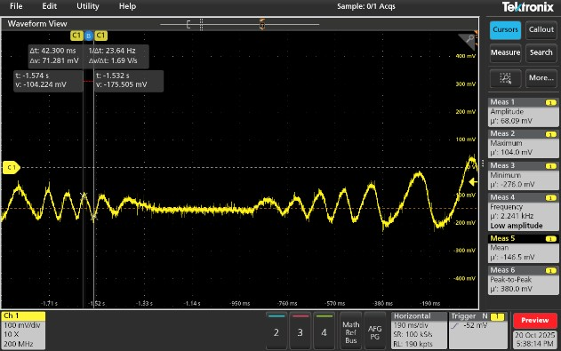
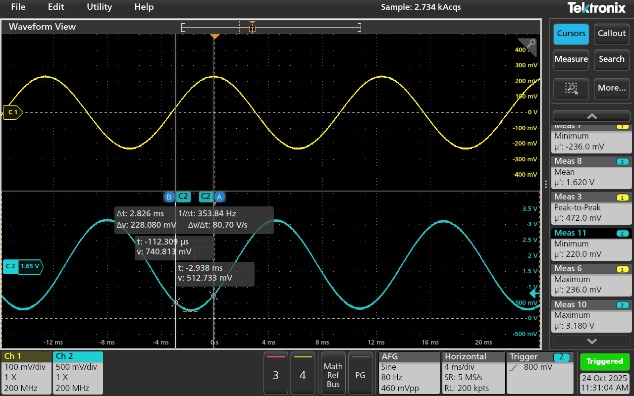
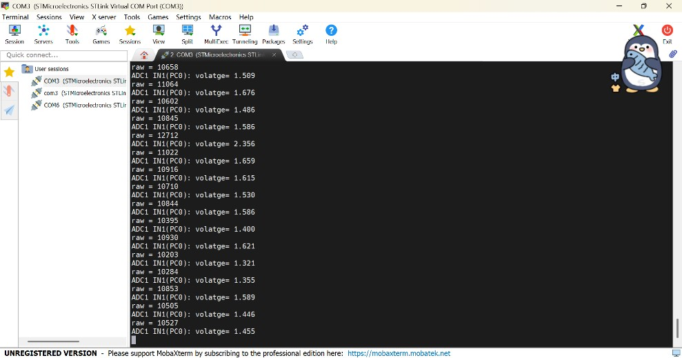

Sensing and analogue electronics
Doppler Radar & STM32 Signal Acquisition
An HB100 radar sensing chain combining analogue signal conditioning with STM32 acquisition.
System overview
The third-year report investigates an HB100 X-band Doppler radar sensor, analogue filtering and STM32 microcontroller interfacing.
Signal chain
Small radar outputs require amplification, band-pass filtering and an offset compatible with the microcontroller input range. Comparator and Schmitt-trigger circuits explore conversion to a digital waveform.
Validation
The report records oscilloscope waveforms, USART communication and ADC readings. The page describes signal acquisition rather than claiming a calibrated speed-measurement product.
Signal-chain measurements
The laboratory report records the radar output, signal-conditioning waveforms and ADC serial readings. These measurements support acquisition and conditioning of the signal, rather than calibrated target-speed accuracy.


